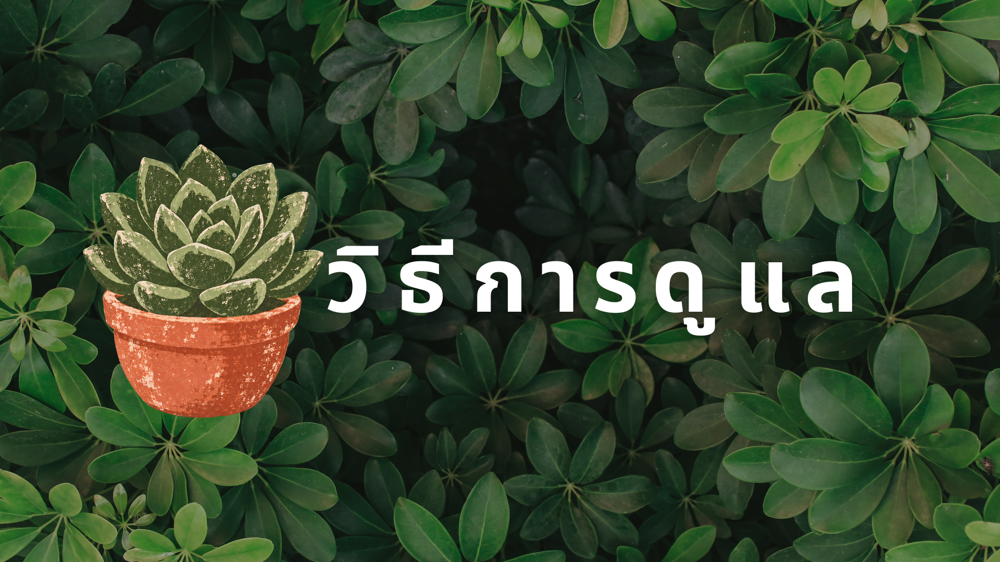

|
|||
 |
|||
-เหมาะกับไม้ยืนต้น ไม้ดอก และพืชผัก (ได้รับแสง 6 ชั่วโมงขึ้นไป/วัน)
-แดดรำไร/ร่ม (Partial Sun / Shade): เหมาะกับไม้ประดับในบ้าน ไม้ใบ เช่น มอนสเตอร่า พลูด่าง (ชอบแสงผ่านกรองหรือแสงหน้าต่าง)
-ตรวจสอบความชื้นของดินก่อนรดน้ำเสมอ โดยใช้นิ้วจิ้มลงไปในดินประมาณ 1-2 นิ้ว
-รดน้ำเมื่อหน้าดินเริ่มแห้ง และรดให้ชุ่มจนไหลออกก้นกระถาง (หลีกเลี่ยงน้ำขังสะสมเพราะจะทำให้รากเน่า)
-เลือกใช้ดินที่ระบายน้ำและอากาศได้ดี เช่น ดินผสมกาบมะพร้าวสับ หรือเพอร์ไลต์
-กระถางปลูกต้องมีรูระบายน้ำที่ก้นกระถางเสมอ
-ปุ๋ยอินทรีย์/ปุ๋ยคอก: ช่วยปรับสภาพดิน เติมสารอาหารธาตุหลักและธาตุรอง